UI batch: before and after
2026-10-28. Items 3, 17, 21, 23–25, 27, 28, 41, 42, 43 and 47, plus the all-days default. Both builds ran as Testing hosts on the same seeded commute (mock data). "Before" is commit 2811f85.
Dashboard
- newOne toolbar: search, All / Monitoring / Paused filter, and Add commute on one row (#21).
- newBuild version
261028fixed bottom-right (#28). - changedEach route card has its own error fallback with Retry (#25). Card sparklines are now an opt-in advanced panel (#47).
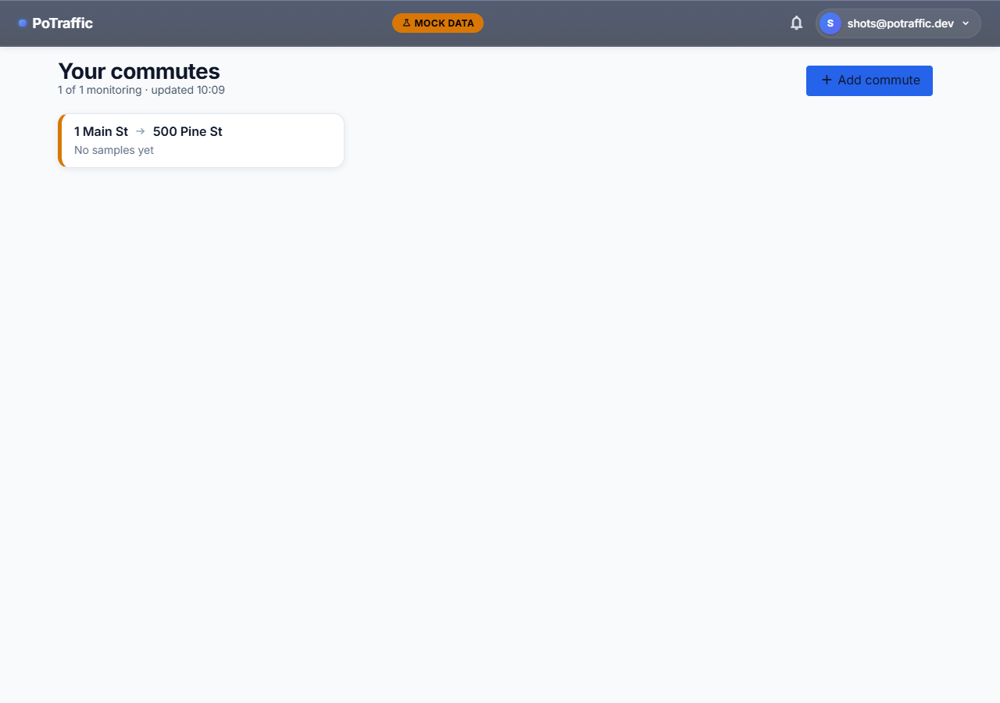
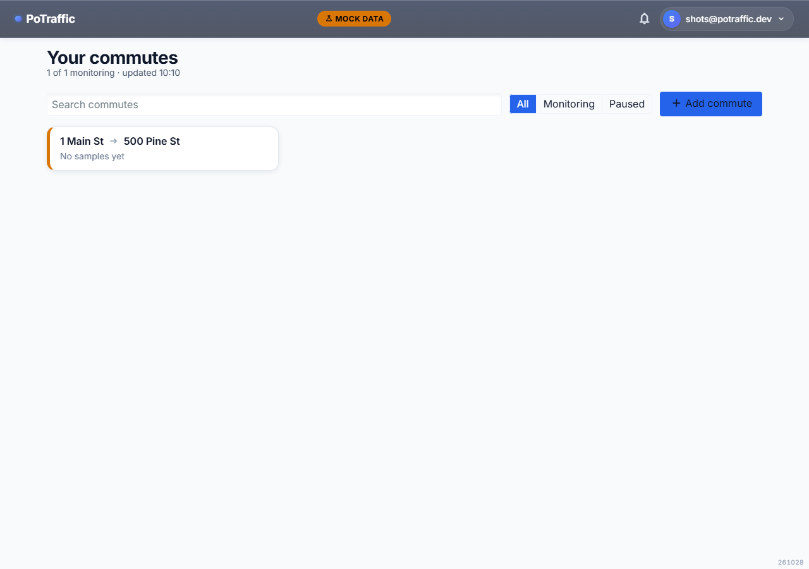
Dashboard on a phone
- newSearch and the filter wrap onto their own lines; Add stays in the bottom nav. The version sits above the nav.
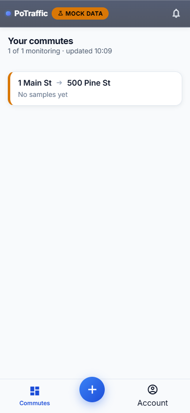
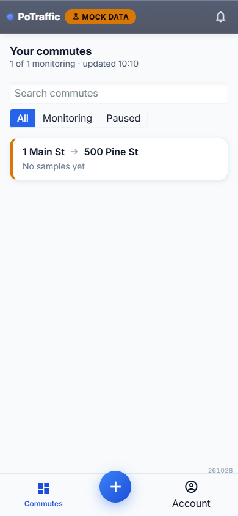
New commute
- changedDefault window is 03:00 to midnight (was now to now + 6h), on all 7 days (was Mon–Fri). One shared default for both schedule editors (#42).
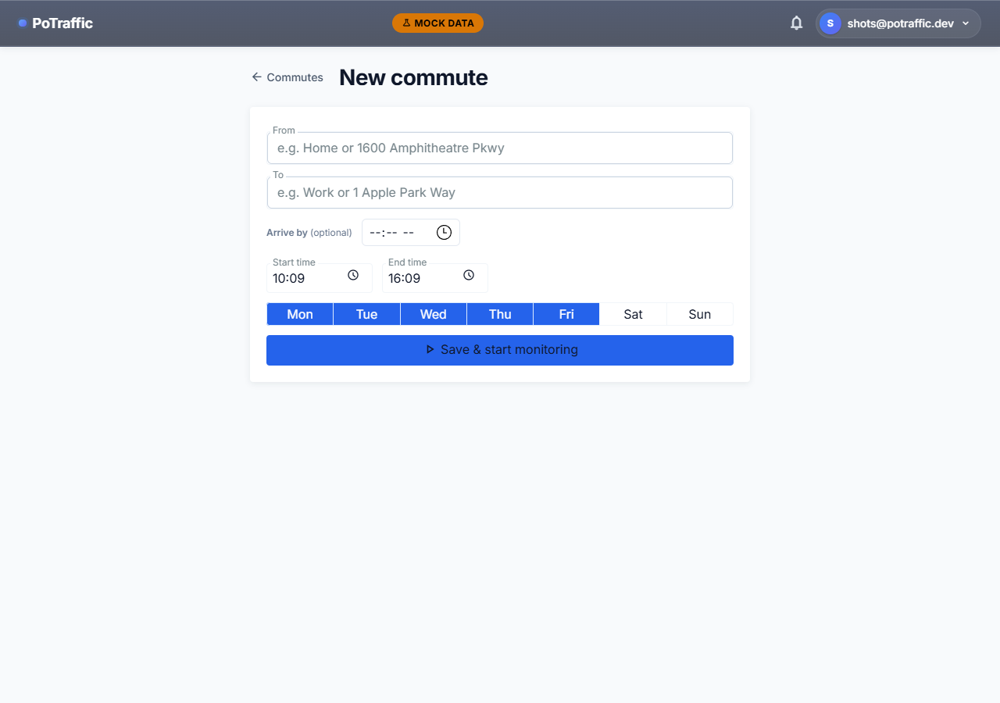
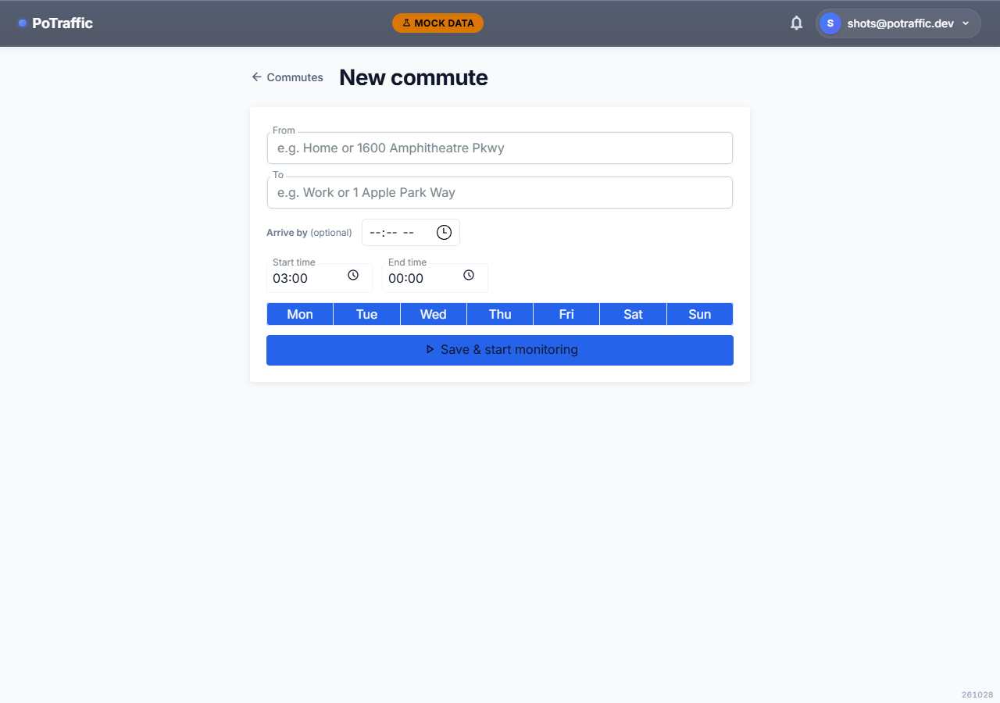
Commute page
- newTabs: Overview, Schedule, History (#24). History appears only when the weekly pattern or weather impact is switched on.
- changedMap, weekly pattern and weather impact are hidden by default and switched on in Settings (#47).
- newSkeleton while loading (#27); each panel has its own error fallback (#25).
- newToday's chart shades rainy, snowy, stormy and foggy stretches and names the weather in the tooltip (#3). Not visible here: the seeded commute has no samples yet.
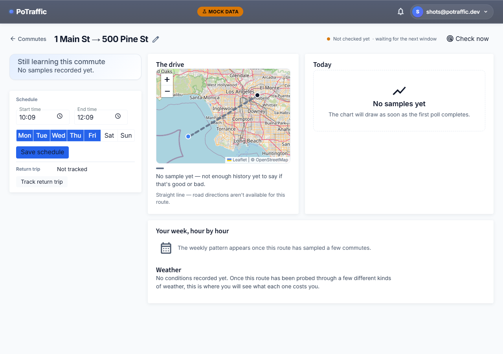
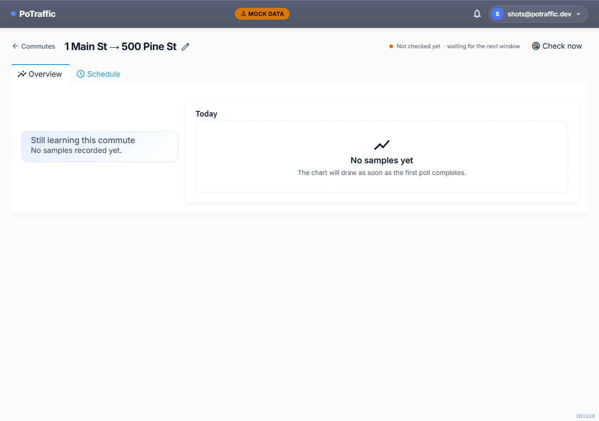
Commute page: schedule
- changedThe schedule editor and return trip moved to their own tab, with the 03:00–midnight, all-days default.
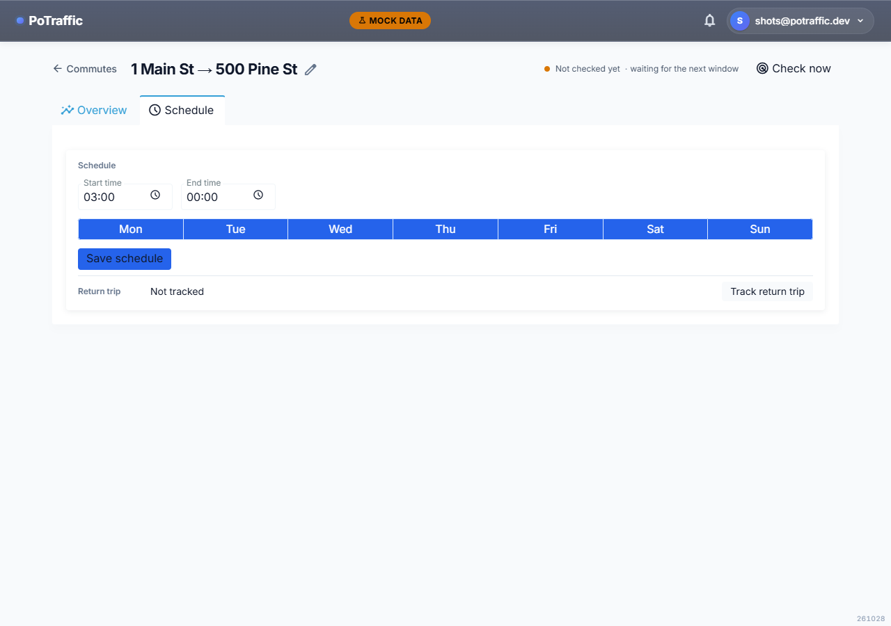
Commute page on a phone
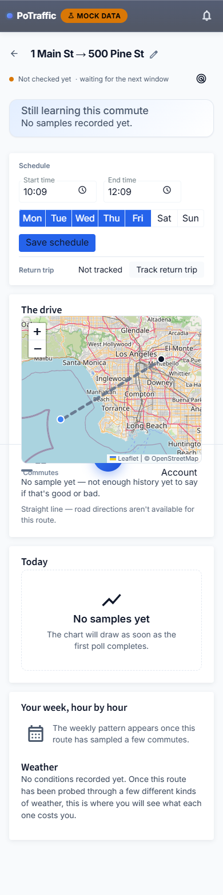
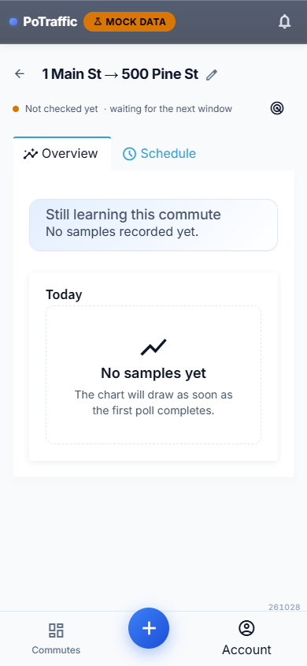
Settings
- new"Advanced panels": card sparklines, route map, weekly pattern and weather impact, all off by default and saved on this device (#47).
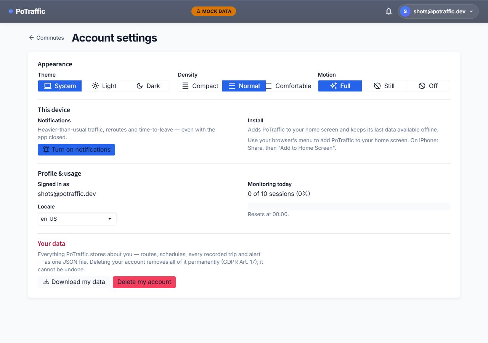
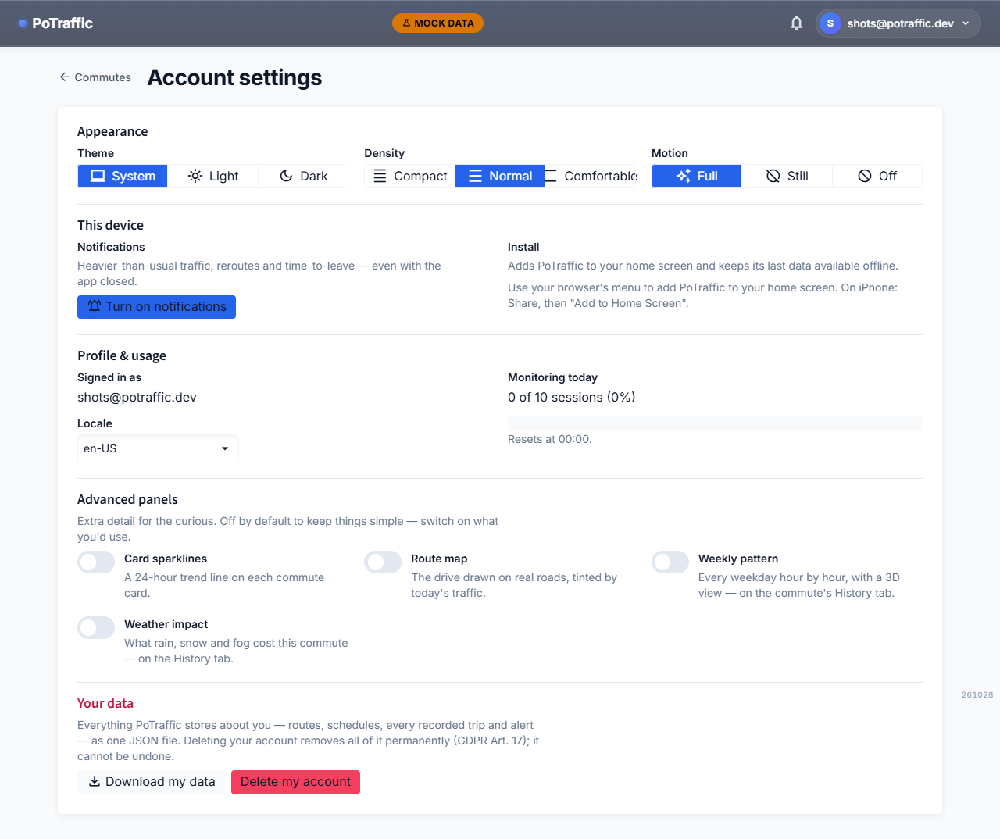
Not shown in screenshots: the countdown ring pulse in the last 60 seconds (#17), the shared once-a-second timer (#43), "midnight" in window summaries (#41), and the admin tables turning into cards on phones (#23, admin only).